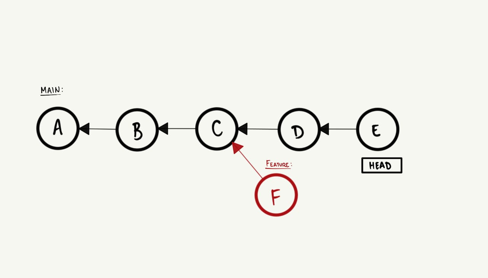
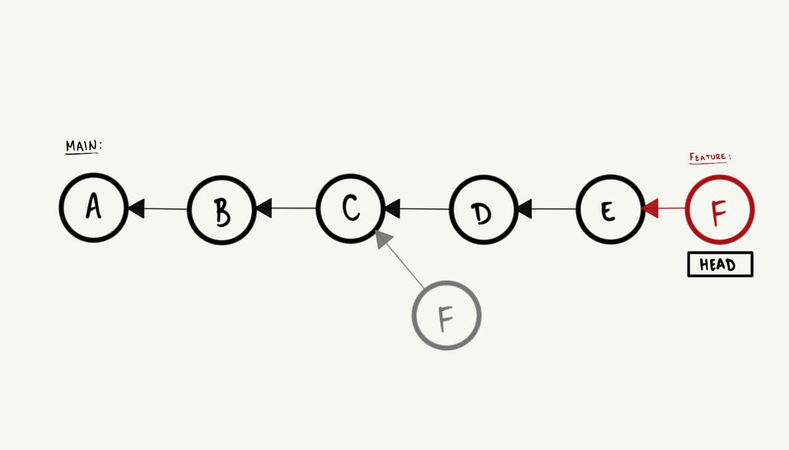
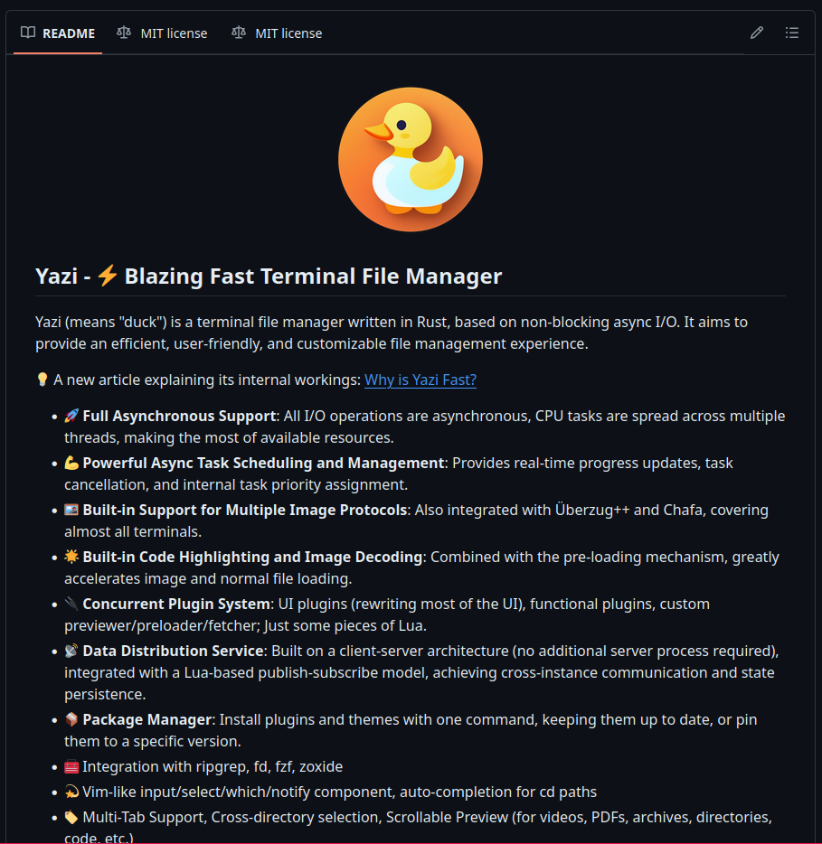
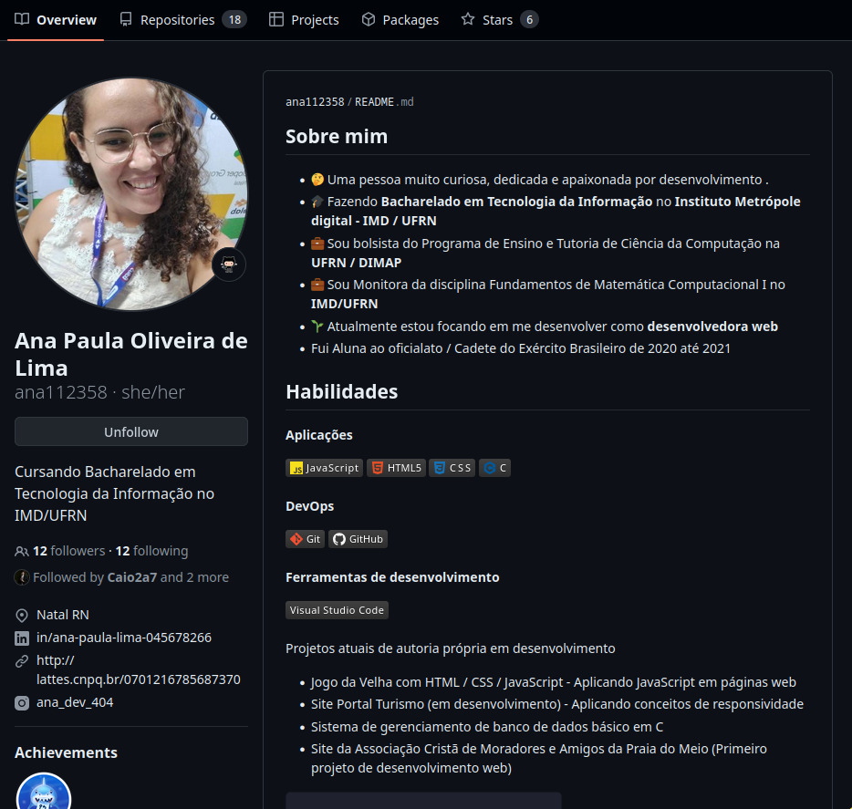
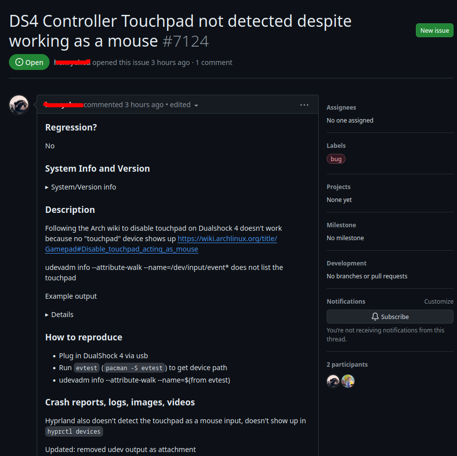
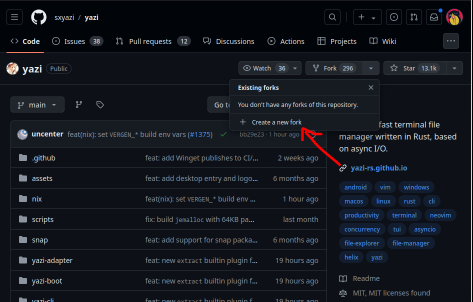

GitHub e boas práticas de Git
Sumário
Na aula anterior, começamos a trabalhar conceitos mais avançados de Git e Github, os quais permitem trabalhar de forma colaborativa em projetos de software. Nesta aula, vamos explorar
Pull requests
Primeiro, vamos relembrar o que sabemos sobre branches e o workflow tradicional do Git, no qual temos uma branch principal e criamos branches paralelas para desenvolver novas funcionalidades que são posteriormente integradas à branch principal. Num workflow tradicional, o processo de integração ocorre através de merges, e esses merges são
O pull request (merge requests), ou PR, nada mais é que uma
O processo de pull request é muito simples e pode ser quebrado em alguns passos:
- Crie uma
branch local e faça asalterações desejadas. - Faça a
publicação da branch local no repositório remoto. - Acesse o repositório remoto e
crie um pull request . - Peça para um ou mais colaboradores
revisarem seu código e faça alguma alteração se necessário. - Após aprovado e revisado, o pull request pode ser
integrado ao projeto. -
Delete a branch remota e local.
Algumas boas práticas envolvendo a criação de pull requests são:
- Faça uma
boa revisão do seu código e pull request antes de submetê-lo. - Escrever um
bom título edescrição concisa e com propósito claro. - Prover
contexto einformações adicionais que possam ajudar orevisor .
Rebase
Até então, vimos que o Git possui um comando chamado
Assim como o
-
Primeiro, imagine o seguinte histórico de commits:

-
Agora, ao invés de criar um commit extra, quando usamos o comando
git rebase feature todos os commits dabranch feature são reaplicados notopo da branch main :
Assim como o three-way merge, o rebase só funciona dessa forma se rebase é uma operação merge e, se não for usada com cuidado, pode lhe
causar muita dor de cabeça.
Cuidados com o rebase
Como foi dito anteriormente, o rebase é uma operação mais complexa que o merge e deve ser usada com cuidado, pois essa operação
Para estar sempre rebase, use-o se, e somente se:
- Você tem uma
branch local que não foi publicada no repositório remoto. - Você está trabalhando em uma branch local ou remota que você tem
certeza queninguém mais está usando .
Stash
Saindo um pouco do assunto de branches e pull requests, vamos falar agora sobre um comando que pode ser muito útil em
algumas situações do dia-a-dia. O comando
-
Salve as alterações que você estava fazendo com
git stash . Alternativamente, use a flag-u ou-m para salvar suas suas alteraçõesnão rastreadas ou salvar as alteraçõescom mensagens , respectivamente. -
Troque de branch ou faça as operações que você deseja.
- Recupere as alterações salvas com
git stash pop [opcional-nome_do_stash] , alternativamente, usegit stash apply [opcional-nome_do_stash] para manter asalterações salvas no stash .
Alguns sub-comandos do git stash que também podem ser úteis são:
- git stash list:
Lista todos os stashes salvos. - git stash drop:
Remove um stash específico. - git stash clear: Remove
todos os stashes salvos. - git stash show [nome_do_stash]: Mostra as
alterações salvas em um stash específico.
Pout-Pourri
Para os propósitos do curso, finalmente exploramos tudo que nós do PET consideramos
Changelog e README
Geralmente, quando começamos no Github e passamos a trabalhar em projetos, seguir outros desenvolvedores e ver o que eles
estão fazendo, é muito comum nos depararmos com arquivos chamados CHANGELOG.md e README.md (inclusive, fizemos um deles
no último projeto). Por exemplo, no repositório do yazi:

O arquivo
Além do README, o
- Changelogs são para
humanos , não máquinas. - Cada
versão deve serdatada . - Os mesmos
tipos de mudanças devem ser agrupados. - As
mudanças devem ser descritas de formaclara econcisa . - As mudanças devem ser listadas em
ordem decrescente de importância. - A
última versão deve ser aprimeira entrada . - Mencionar se segue o Semantic Versioning.
Para mais informações sobre o CHANGELOG.md convido-lhe a acessar o site
keepachangelog.
Perfil no GitHub
Lembrando que o Github também é uma
- Matenha
foto de perfil e informações básicasatualizadas . - Adicione um
README.md ao seu perfil: Assim como o README de um repositório, o README do perfil pode ser usado para seapresentar , mostrar suashabilidades ,projetos , etc. - Gerencie seus repositórios: Coloque seus
repositórios mais relevantes no topo , organize-os emcategorias , use tópicos, etc. - E, principalmente, seja ativo:
Contribua em outros projetos , crie projetos,siga pessoas eempresas , etc.

Issues
Lembra do que eu falei sobre ser ativo no Github? Uma das formas mais interessantes de

A depender do projeto, pode ser necessário que as issues sigam algum
# Descrição do bug
Uma descrição clara e concisa sobre o bug.
# Para reproduzir
Passos para reproduzir o comportamento:
1. Vá até
2. Execute
3. Veja o erro
# Comportamento esperado
Uma descrição clara e concisa do comportamento esperado.
# Fotos/Screenshots
Se viável, adicione fotos ou screenshots para ajudar a explicar seu problema.
# Informações do seu sistema
- Sistema operacional: ArchLinux
- Navegador: Firefox
- Versão do software: 22.0.0
# Logs de erro
Se aplicável, adicione logs de erro.
Forks
Além de issues, outra forma de

Conventional Commits
Por fim, vamos falar sobre uma convenção de commits que pode ser muito útil para manter o histórico orgaizado e legível. Os Conventional commits oferecem um conjunto de regrinhas que padronizam a forma que você escreve suas mensagens de commit, as quais segue a seguinte estrutura:
<tipo>[escopo (opcional)]: <descrição>
[corpo (opcional)]
[rodapé (opcional)]
Em síntese, os tipos de commit que surgem do Angular convention, são:
- fix:
Correção de um bug ou problema. - feat: Adição de uma
nova funcionalidade . - docs: Mudanças na
documentação . - style: Mudanças que
não afetam o significado do código (espaços em branco, formatação, etc). - refactor: Mudanças que
não corrigem bugs nem adicionam funcionalidades. - perf: Mudanças que
melhoram a performance . - test: Adição de
testes . - build: Mudanças no
processo de build , ferramentasauxiliares , etc. - ci: Mudanças em
arquivos de configuração e scripts . - BREAKING CHANGE: Mudanças que
quebram a compatibilidade .
Antes do
Um exemplo de commit seguindo a convenção seria:
feat: allow provided config object to extend other configs
BREAKING CHANGE: `extends` key in config file is now used for extending other config files
© PET-CC/UFRN 2024 Licenciado sob CC BY-NC-SA.